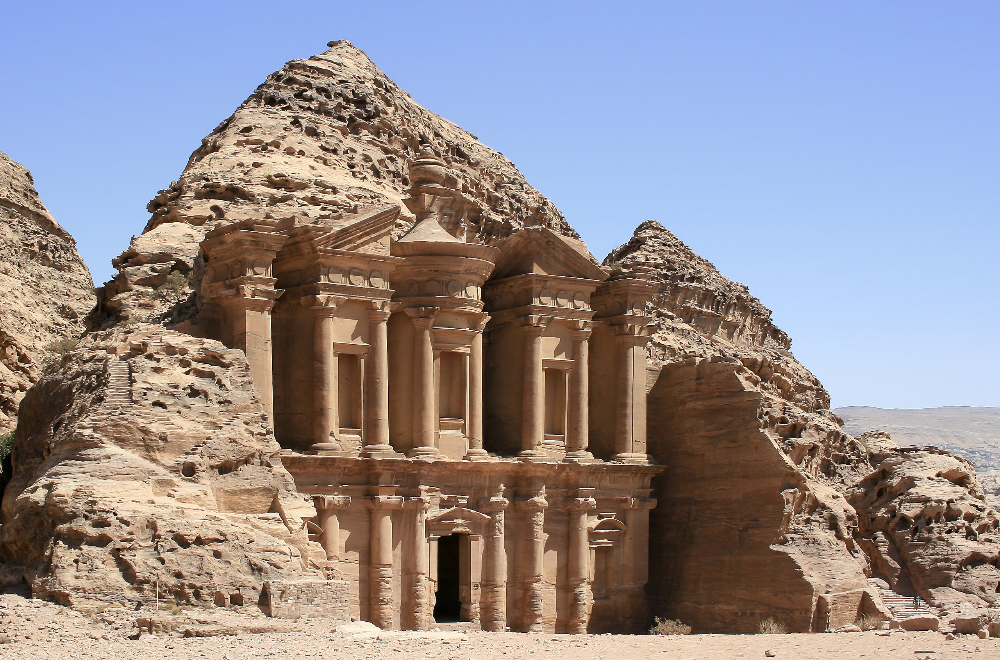

Tembok Besar, China
Tembok Besar China adalah sebuah struktur pertahanan yang memiliki sejarah panjang dan merupakan simbol kekuatan dan ketahanan Tiongkok.
Tembok Besar ini dibangun untuk melindungi Tiongkok dari serangan dan invasi pada masa lalu. Panjang total Tembok Besar mencapai sekitar 21.196 km dan merupakan salah satu daya tarik wisata yang paling terkenal di dunia.

Patung Christ the Redeemer, Brazil
Patung Christ the Redeemer (Cristo Redentor) terletak di Gunung Corcovado, Rio de Janeiro, Brasil. Patung ini adalah salah satu ikon yang paling dikenal di dunia dan menjadi simbol agama dan budaya Brazil.
Dibangun pada tahun 1931, patung ini memiliki tinggi sekitar 30 meter dan menyajikan Yesus Kristus dengan tangan terbuka sebagai tanda perdamaian dan penyatuan.

Machu Picchu, Peru
Machu Picchu adalah situs arkeologi yang terletak di Pegunungan Andes, Peru. Tempat ini merupakan bekas kota suku Inca yang tersembunyi dan ditemukan pada tahun 1911. Machu Picchu dikenal karena keindahan arsitektur
Inca-nya yang menakjubkan, lokasinya yang spektakuler di atas gunung, dan pemandangan alam yang menakjubkan.

Taj Mahal, India
Taj Mahal adalah sebuah mausoleum yang terletak di Agra, India. Dibangun pada abad ke-17 oleh Kaisar Shah Jahan sebagai monumen cinta untuk istrinya, Mumtaz Mahal, Taj Mahal dianggap sebagai salah satu contoh arsitektur Mughal yang paling indah di dunia. Dengan keindahan seni, kehalusan detail
, dan keajaiban arsitektur Mughal, Taj Mahal menjadi salah satu tempat tujuan wisata paling populer di dunia.

Petra, Yordania
Petra adalah sebuah kota kuno yang terletak di Yordania. Dikenal juga sebagai "Kota Batu Merah," Petra terkenal dengan arsitektur klasiknya yang diukir di tebing dan monumen yang spektakuler. Salah satu struktur paling terkenal
di Petra adalah Al-Khazneh ("The Treasury"), yang menjadi ikonik setelah muncul dalam film Indiana Jones.

Colosseum Roma, Italia
Colosseum adalah sebuah amfiteater besar yang terletak di Roma, Italia. Dibangun pada abad ke-1 Masehi, Colosseum adalah salah satu keajaiban arsitektur Romawi kuno yang paling terkenal.
Tempat ini digunakan untuk pertunjukan gladiator, pertandingan binatang, dan berbagai acara hiburan di masa lalu.

Chichen Itza, Meksiko
Chichen Itza adalah situs arkeologi suku Maya yang terletak di Semenanjung Yucatan, Meksiko. Tempat ini menjadi contoh luar biasa dari kebudayaan Maya kuno. Salah satu struktur paling terkenal di Chichen Itza adalah
Piramida Kukulkan, juga dikenal sebagai El Castillo. Piramida ini memiliki arsitektur yang presisi dan menarik perhatian dengan efek visual unik pada setiap equinox ketika bayangan terlihat seperti ular meluncur ke bawah tangga.

ABOUT ME
Nama : Muhammad Farras Yasyfa
Kelas : 2SE2
Umur : 19 Tahun
Jurusan : Teknik Informatika
Hobby :
- Valorant
- Valorant
- Valorant